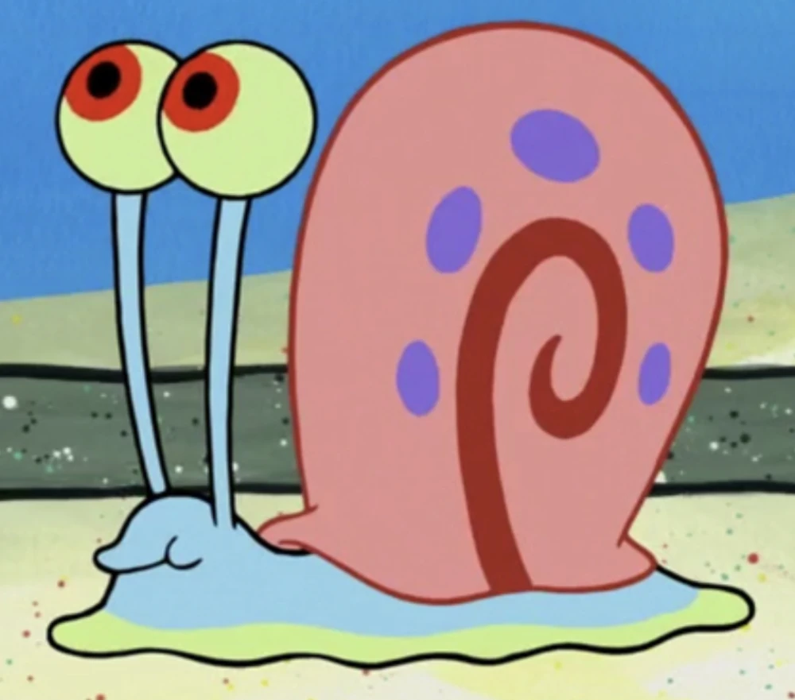
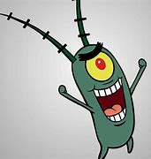

Slow and steady, I'm Gary the Snail. SpongeBob's loyal companion.

spongebob.fandom.com/
Gary the Snail
Gary was originally intended to be a minor joke character that would appear in the background of SpongeBob's bedroom, just like SpongeBob's pet scallop Shelley. However, as the series progressed, Gary developed a personality of his own beyond just saying "meow." He was eventually added to the show's Main Model Pack on March 22, 2000 and became one of the ten main characters.
215784020

Plankton@Plankton.bikini · July 12
Ahoy there, matey! How can I be of service to ye today?
oceanservice.noaa.gov
What are plankton?
The word “plankton” comes from the Greek for “drifter” or “wanderer.” An organism is considered plankton if it is carried by tides and currents, and cannot swim well enough to move against these forces. Some plankton drift this way for their entire life cycle. Others are only classified as plankton when they are young, but they eventually grow large enough to swim against the currents. Plankton are usually microscopic, often less than one inch in length, but they also include larger species like some crustaceans and jellyfish.